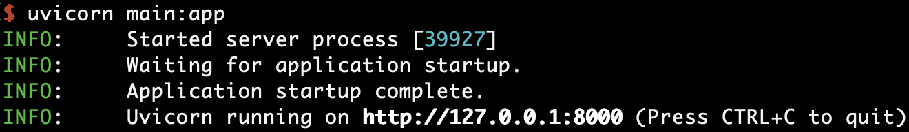
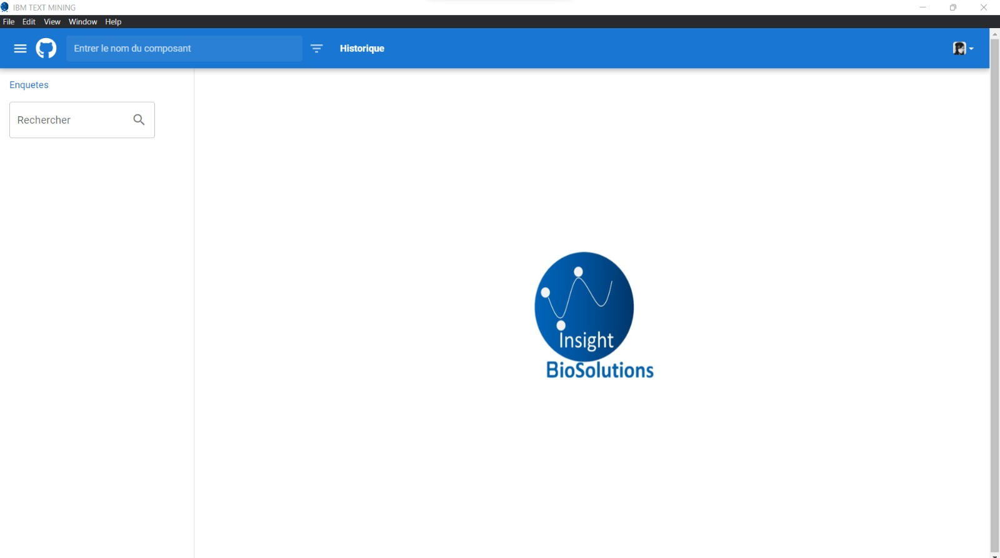
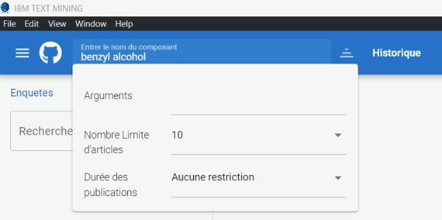
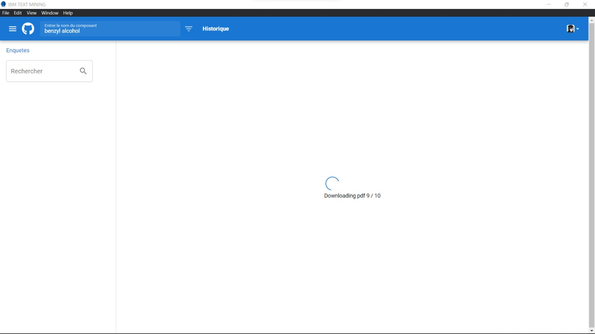
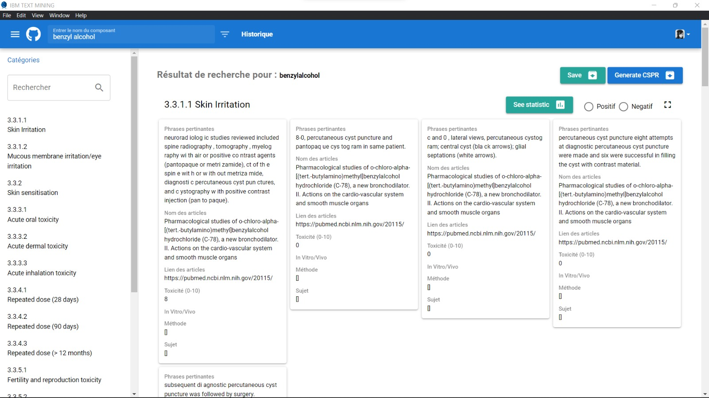
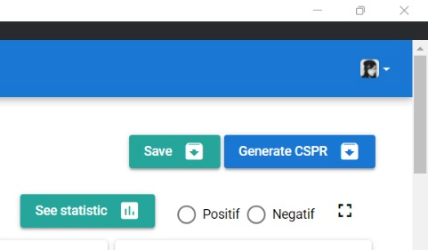

Usage¶
This document explains all the steps necessary to use IBS Text-Mining™. The application is divided into a back-end and a front-end. To use it, it is mandatory that both parts are running properly. The front-end is a Windows executable. No other operating systems are supported currently.
Installation¶
Python¶
To use IBS Text-Mining™, you will need Python 3 (it is recommended any version above 3.9). To more information on how to install Python click here. To check your Python version, do:
python --version
or
python3 --version
Dependencies¶
To install all dependencies and execute the program it is recommended to use a virtual environment and the pip package manager:
cd src/
python -m venv {/path/to/new/virtual/environment}
Activate the virtual environment:
source {/path/to/new/virtual/environment}/bin/activate
Install all requirements:
pip install -r requirements.txt
Running the back-end¶
uvicorn main:app
You should see in your terminal something like this:
{kind=link}
Running the front-end¶
Simply run the executable IBM TEXT MINING.exe
A window should pop up:
{kind=link}
Search for articles¶
In the top bar you can find the field where you can search for articles about a particular component:
{kind=link}
To make a search, type the main search term in this field. In the optional arguments field you can add terms separated by slashes. Each additional term will occur in an additional search using the main term and the additional one.
Example:
Base word: benzyl
Arguments: alcohol/ether/acid
The program will search for articles that match any of the following queries:
'benzyl alcohol'
'benzyl ether'
'benzyl acid'
Search parameters¶
You alter the search parameters.
Articles limit¶
You can set any number of maximum number of articles desired as output. The downloaded articles will the most relevant one as ranked by the search engine you use until the threshold set. If the number of search results is smaller than the limit, all found articles will be downloaded.
Article age¶
You can limit your search for articles that are at most 1, 5 or 10 years old. Otherwise, any article will be included in the result regardless of its release date.
Search results¶
When a search is underway you can track the progress by watching the screen:
{kind=link}
After the search is over you can find the results in left sidebar:
{kind=link}
If you click the term searched, you can find the extracted informations divided into categories:
{kind=link}
To see statistics and generate the CSPR report, simply click the buttons on the top right corner:
{kind=link}